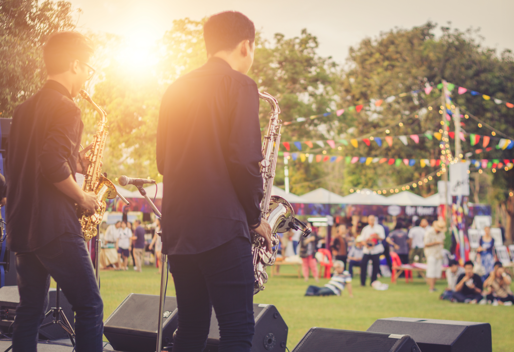

DAY 1
Performing Arts Showacase (1 PM - 5:55 PM)
The Performing Arts Showcase will be featuring up-and-coming Asian-American musicians, dancers, actors, comedians, puppeteers, and many more from the Bay Area.

Prof. Russell Jeung (12 - 12:55 PM)
Dr. Russell Jeung is a sociologist and professor at San Francisco State University since 2002. Jeung is deeply involved in many community projects and is a co-founder of Stop APPI Hate. Dr. Jeung will be opening the festival with a welcome speech, an explanation behind the model minority myth and its impact on the Asian-American community, and how to uplift your Asian-American peers.

Keshi (7 PM - 9:00 PM)
Keshi is an alternative R&B singer-songwriter from Houston, Texas. Keshi started his musical career on SoundCloud in 2017. He is a self-taught musician and originally worked as a nurse before signing with Island Records in 2019. Keshi will be giving a short speech on his experiences of his transition from being a nurse to a musician and performing select works.
DAY 2

Visual Arts Exhibition (1 PM - 5:55 PM)
The Visual Arts Exhibition will feature Asian-American artists from the Bay Area, with mediums including illustration, painitng, sculpture, textiles, and calligraphy.

Avantika (12 - 12:55 PM)
Avantika is an actress, singer, and Bay Area native. Avantika began her acting career in Telugu cinema and has risen in American cinema thanks to her roles in Spin, Senior Year, Means Girls (2024), and Tarot. She will be kicking off day 2 with a speech on her experiences as a rising actress and a Q&A session.

Mitski (7 PM - 9:00 PM)
Mitski is an alternative singer-songwriter, known for her unique musical style and moving lyrics. Mitski had humble beginnings as an indie artist attending SUNY Purchase and rose to popularity with her 2016 album Puberty 2. Mitski will be giving a short speech on her experiences as an Asian-American woman in the music industry and performing select works.
DAY 3

Feasting Festival (12 PM - 5:55 PM)
The Feasting Festival will be featuring Asian-American chefs and restaurateurs based in the Bay Area. From authentic classics to innovative fusions, this feast will surely fill you up!

Olivia Rodrigo (7 PM - 9:00 PM)
Olivia Rodrigo is an actress and singer-songwriter. Starting her career in Disney Channel, Rodrigo transitioned to music and has since received critical acclaim with her albums Sour (2021) and Guts (2023). Furthermore, Rodrigo is active in philanthropy and activism, particularly in women’s rights, reproductive rights, and health advocacy. She will be ending the festival with a short speech and performing select works.